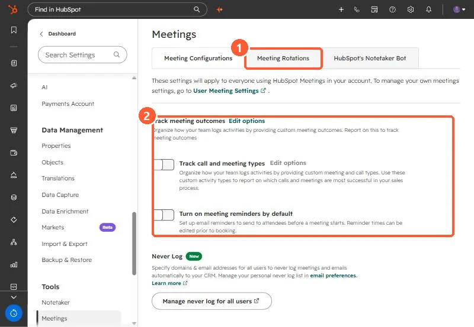

Short answer
Settings, Tools, Meetings has a Meeting Rotations tab. A rotation lists members (users or teams); on a round robin scheduling page with a rotation, only the next person's availability shows. Turn a member's Availability switch off for leave. With Prioritize contact owner on, an owned contact sees their owner's availability first. Remove deactivated users from rotations, or meetings can still book to them.
1. Where


2. How rotations pick
- Without a rotation, a round robin page shows the combined availability of all members.
- With a rotation, only the next member's availability shows.
- With Prioritize contact owner on, an owned contact's owner comes first.
- Adding someone to a team in the rotation adds them to the rotation.
3. When people leave
HubSpot warns that a deactivated user still in a rotation or round robin page can keep getting booked, and won't be notified. Remove or reassign them as part of offboarding. The same page holds account-wide meeting outcomes, call and meeting types, and reminders. See meeting outcomes.